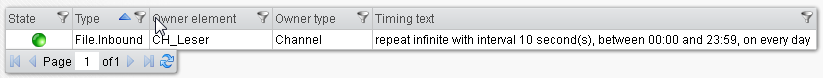
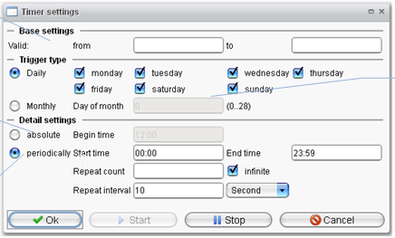

Timer

Topic content
Here you have the possibility to configure all timer of a scenario.

Select the corresponding scenario and click on the timer you want to edit.
You can configure the timer similarly as in the designer:

• This is the range of validity for this timer.
• Select when the timer is active within the range of validity.
•
o The timer starts only once a day.
o The timer starts periodically within different intervals.